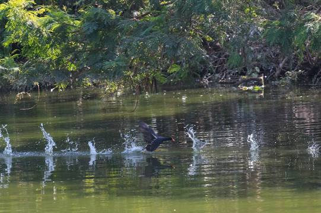
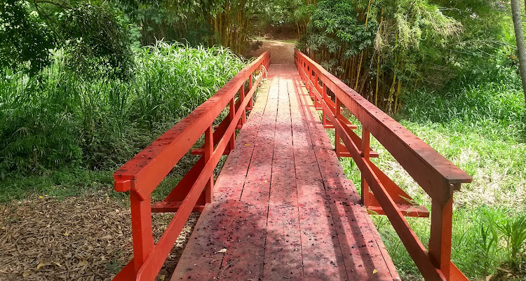

Zoológico Municipal Quinzinho de Barros
The Municipal Zoological Park "Quinzinho de Barros" is a 15-hectare zoo located in the municipality of Sorocaba, state of São Paulo, Brazil. It is a member of the Society of Brazilian Zoos, and is considered Brazil's second zoo in terms of species.
Floresta Nacional de Ipanema
Trails offer scenic views in this national forest also featuring ruins of a 19th-century steel mill.
Parque Natural da Água Vermelha
Leafy city park with a pond home to fish, ducks & turtles, plus a playground & covered picnic spots.
MACS - Museum of Contemporary Art in Sorocaba
Contemporary free-entry art museum, founded in 2004, with an international & Brazilian collection.
Cachoeira da Chave
Uma cachoeira muito interessante para se curtir com os amigos e familia, não sendo um lugar lotado permitindo uma maior diversão.
Parque Do Paço Municipal Sorocaba
Parque Do Paço Municipal Sorocaba mais conheçido como prefeitura, localiza-se na Av. Eng. Carlos Reinaldo Mendes, 3041 - Alto da Boa Vista, Sorocaba - SP, 18013-280. E é um lugar aberta para se divertir muito com a família e amigos, sendo tambem um lugar que ocorre muitos eventos aos finas de semana, venha curitr!